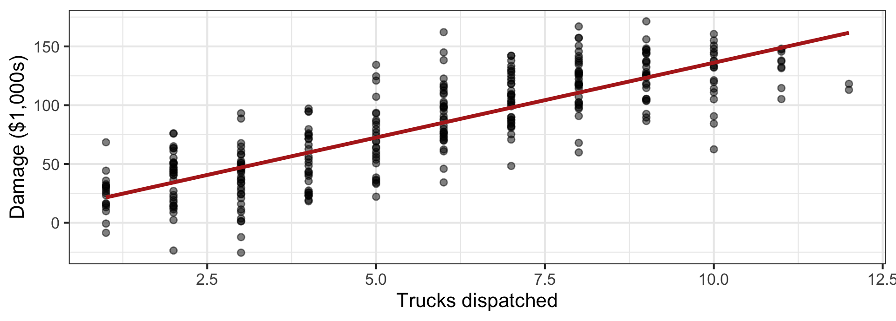
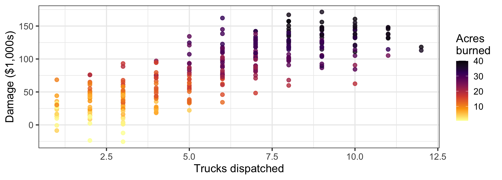
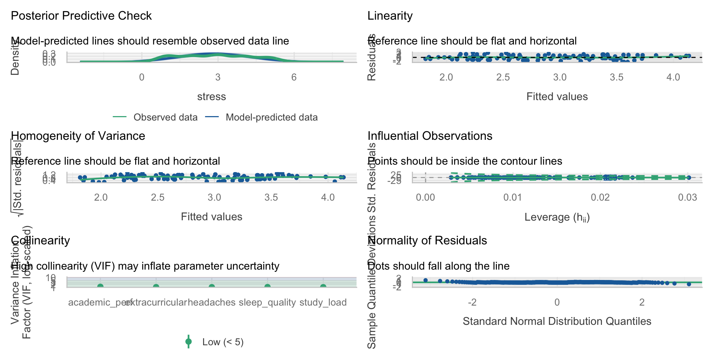

Week 08: Multiple Regression I
Date: October 15, 2026
Today…
One predictor was never the plan.
- Why a second predictor changes the first one’s meaning
- “Holding constant” — what it actually does
- A slope that flips sign when we add the right variable
- Did the new predictor earn its place? (\(\Delta R^2\), nested \(F\))
- b or β: which one do you report?
- When predictors step on each other (multicollinearity)
Where we have been
| Week | Model | What was new |
|---|---|---|
| 5 | \(Y = b_0 + b_1X\) | one continuous predictor |
| 6 | \(Y = b_0 + b_1D\) | the predictor can be a group |
| 7 | \(SS_{total} = SS_{model} + SS_{res}\) | how well the line fits |
Everything so far has been one predictor at a time. That is almost never the model you want.
The only equation we need
\[Y_i = b_0 + b_1X_{1i} + b_2X_{2i} + \dots + b_kX_{ki} + e_i\]
- \(b_0\) — predicted \(Y\) when every predictor is 0
- \(b_1\) — change in \(Y\) per 1-unit change in \(X_1\), holding the other predictors constant
- \(e_i\) — still the part we miss
Important
That phrase — holding the other predictors constant — is the entire week. It is not decoration. It changes what the number means.
Part 1: Why Bother?
You have been hired by the county 🚒
The fire department wants to know what drives the cost of a fire.
They hand you 300 fires: how many trucks were dispatched, how many acres burned, and the damage in thousands of dollars.
Start where we always start

What would you tell the county?
- b = 12.73: each additional truck is associated with $12,730 more damage
- \(p\) < .001, \(R^2\) = .67 — this is not a fragile finding
“Trucks strongly predict damage. Send fewer trucks.”
Warning
Every number in that sentence is correct. The recommendation would get people killed.
🧠 Side quest: draw the thing
Before you fit anything, sketch what you think is going on. Arrows for “causes.”
- Does
trucks→damage? - Does something cause both?
A variable that causes both your predictor and your outcome is a confound. Leave it out and your slope absorbs its effect.
These sketches have a name. Remember when we talked about Directed Acyclic Graphs (DAG’s)?
The variable we ignored

Big fires get more trucks and do more damage. The slope we estimated was mostly fire size wearing a truck costume.
Put acres in the model
# A tibble: 3 × 5
term estimate std.error statistic p.value
<chr> <dbl> <dbl> <dbl> <dbl>
1 (Intercept) 10.9 1.65 6.62 1.64e-10
2 trucks -2.63 0.579 -4.54 8.16e- 6
3 acres 4.09 0.138 29.6 9.72e-91trucks: +12.73 → −2.63. The sign flipped.acres: +4.09 per acre- \(R^2\): .672 → .917
Each additional truck is associated with $2,630 less damage — among fires of the same size.
What just happened
Before
We compared a 2-truck fire to a 9-truck fire. Those are not the same fire. One was a kitchen; one was a neighborhood.
After
We compare 2-truck and 3-truck fires of the same acreage. Now the extra truck can only help.
“Holding constant” is a comparison, not a magic word
\(b_1\) answers: among cases that are identical on every other predictor in the model, what is the difference in \(Y\) per unit of \(X_1\)?
Identical on the predictors you included. Nothing else.
Omitted variables do not politely disappear
When you leave out a variable that is related to both \(X\) and \(Y\), its effect does not vanish — it gets folded into the coefficients you did estimate.
- Sometimes the slope is inflated (the trucks case)
- Sometimes it is shrunk (next week’s tutoring example)
- Sometimes it appears out of nowhere (Lab 8’s suppression)
- Sometimes nothing moves — and that is a finding too
You cannot tell which from the output. You can only tell from what you chose to measure.
Part 2: Real Data, Real Stakes
520 students, one survey 😵💫
A student-stress survey: everything rated 1–5. The column names are, charitably, a disaster — so we rename by position.
vars n mean sd median min max range skew kurtosis se
sleep_quality 1 520 3.12 1.10 3.0 1 5 4 0.01 -0.66 0.05
headaches 2 520 2.18 1.25 2.0 1 5 4 0.75 -0.48 0.05
academic_perf 3 520 3.33 1.06 3.0 1 5 4 -0.34 -0.28 0.05
study_load 4 520 2.75 1.37 2.5 1 5 4 0.23 -1.25 0.06
extracurricular 5 520 2.68 1.47 3.0 1 5 4 0.32 -1.26 0.06
stress 6 520 2.88 1.36 3.0 1 5 4 0.09 -1.18 0.06Who correlates with stress?
sleep_quality headaches academic_perf study_load
sleep_quality 1.000 -0.059 0.254 0.065
headaches -0.059 1.000 -0.205 -0.007
academic_perf 0.254 -0.205 1.000 0.096
study_load 0.065 -0.007 0.096 1.000
extracurricular 0.001 -0.073 0.153 0.175
stress 0.165 -0.072 0.055 0.392
extracurricular stress
sleep_quality 0.001 0.165
headaches -0.073 -0.072
academic_perf 0.153 0.055
study_load 0.175 0.392
extracurricular 1.000 0.052
stress 0.052 1.000Well that doesn’t look nice…
Who correlates with stress? (but looks nice)
https://strengejacke.github.io/sjPlot/reference/tab_corr.html
| Sleep Quality | Headaches | Academic Performance | Study Load | Extracurricular | Stress | |
|---|---|---|---|---|---|---|
| Sleep Quality | ||||||
| Headaches | -0.059 | |||||
| Academic Performance | 0.254*** | -0.205*** | ||||
| Study Load | 0.065 | -0.007 | 0.096* | |||
| Extracurricular | 0.001 | -0.073 | 0.153*** | 0.175*** | ||
| Stress | 0.165*** | -0.072 | 0.055 | 0.392*** | 0.052 | |
| Computed correlation used pearson-method with listwise-deletion. | ||||||
study_loadis the obvious candidate: r = .39sleep_qualityis next: r = .17- And the two predictors barely know each other: r = .065
Model 1: study load alone
# A tibble: 2 × 5
term estimate std.error statistic p.value
<chr> <dbl> <dbl> <dbl> <dbl>
1 (Intercept) 1.81 0.123 14.7 3.11e-41
2 study_load 0.387 0.0400 9.69 1.66e-20# A tibble: 1 × 3
r.squared adj.r.squared sigma
<dbl> <dbl> <dbl>
1 0.153 0.152 1.25Each 1-point increase in study load → 0.39 points more stress. \(R^2\) = .153.
Model 2: add sleep quality
# A tibble: 3 × 5
term estimate std.error statistic p.value
<chr> <dbl> <dbl> <dbl> <dbl>
1 (Intercept) 1.29 0.191 6.76 3.78e-11
2 study_load 0.378 0.0397 9.54 5.55e-20
3 sleep_quality 0.173 0.0495 3.50 5.00e- 4| Predictor | Alone | Together |
|---|---|---|
study_load |
0.388 | 0.378 |
sleep_quality |
— | 0.174 |
The study-load slope moved by 0.01. Essentially nothing.
Why nothing moved
A coefficient only changes when the new predictor is related to both the outcome and the old predictor.
Pearson's product-moment correlation
data: stress$study_load and stress$sleep_quality
t = 1.4933, df = 518, p-value = 0.136
alternative hypothesis: true correlation is not equal to 0
95 percent confidence interval:
-0.0206320 0.1506088
sample estimates:
cor
0.0654704 - r = .065 → the two predictors carry separate information
- So each one keeps the effect it had on its own
- Their contributions simply add
Tip
“I added a predictor and the first one didn’t budge” is a real result, and it is the common one. It means your two predictors are not competing for the same variance. Say that, instead of apologizing for it.
Interpreting Model 2 out loud
\[\widehat{Stress} = 1.29 + 0.378(StudyLoad) + 0.174(SleepQuality)\]
- 1.29 — predicted stress for a student who rated study load and sleep quality as 0. Neither is possible (the scale starts at 1), so this intercept is a mathematical anchor, not a person.
- 0.378 — comparing two students with the same sleep quality, one point more study load goes with 0.38 points more stress
- 0.174 — comparing two students with the same study load, one point more sleep quality goes with 0.17 points more stress
Wait. Read that last one again. 🤨
Better sleep quality predicts more stress (b = +0.174, p < .001), holding study load constant.
Three possibilities, and you cannot choose between them from this output:
- The item is scored backwards — maybe 5 means “I rate my sleep quality as a problem”
- The relationship is real and reflects something else (students who sleep well take on more)
- The survey question was ambiguous and students interpreted it inconsistently
Important
This is the midterm’s lesson arriving in a lecture. Check the direction of every coefficient against what you expected. When it disagrees, the first suspect is always scoring — not the universe.
Part 3: Did It Earn Its Place?
Three ways to ask the same question
# A tibble: 1 × 3
r.squared adj.r.squared sigma
<dbl> <dbl> <dbl>
1 0.153 0.152 1.25# A tibble: 1 × 3
r.squared adj.r.squared sigma
<dbl> <dbl> <dbl>
1 0.173 0.170 1.24| Model | \(R^2\) | adj. \(R^2\) | RSE |
|---|---|---|---|
| study load | .1534 | .1517 | 1.2506 |
| + sleep quality | .1730 | .1698 | 1.2372 |
- \(\Delta R^2\) = .0196 — about 2% more of stress accounted for
- Adjusted \(R^2\) went up, so the predictor paid its own df
- Typical miss shrank from 1.251 to 1.237 (on a variable with SD = 1.358)
The formal test: nested models
Model 1 is nested inside Model 2 — same data, same outcome, Model 1 is Model 2 with one coefficient forced to zero. That lets us test the difference directly.
Reading that table
| Column | What it is | Here |
|---|---|---|
Res.Df |
df left after estimating | 518 → 517 |
RSS |
unexplained SS | 810.12 → 791.34 |
Df |
predictors added | 1 |
Sum of Sq |
SS the new predictor picked up | 18.78 |
F |
is that drop bigger than noise? | 12.27 |
Pr(>F) |
the p-value | .0005 |
With one added predictor, this \(F\) is just the square of its \(t\): \(3.503^2 = 12.27\). Same test, different table. ✅
Now let’s add three useless things
# A tibble: 6 × 5
term estimate std.error statistic p.value
<chr> <dbl> <dbl> <dbl> <dbl>
1 (Intercept) 1.59 0.275 5.80 1.13e- 8
2 study_load 0.383 0.0404 9.50 8.00e-20
3 sleep_quality 0.178 0.0512 3.47 5.68e- 4
4 extracurricular -0.0148 0.0380 -0.389 6.97e- 1
5 headaches -0.0740 0.0445 -1.66 9.73e- 2
6 academic_perf -0.0384 0.0547 -0.703 4.83e- 1Extracurriculars (p = .70), headaches (p = .10), academic performance (p = .48).
Watch the two R²s diverge
| Model | \(R^2\) | adj. \(R^2\) | RSE |
|---|---|---|---|
| 2 predictors | .1730 | .1698 | 1.2372 |
| 5 predictors | .1779 ⬆️ | .1699 ➡️ | 1.2371 |
- \(R^2\) rose by .005, because it always rises
- Adjusted \(R^2\) moved by .0001 — three predictors bought you nothing
- RSE: unchanged to four decimals
Important
Week 7’s warning, now with consequences. \(R^2\) cannot tell you whether a predictor belongs in the model. Adjusted \(R^2\), the nested \(F\), and your theory can.
Part 4: Reporting It
b or β?
# A tibble: 3 × 2
term estimate
<chr> <dbl>
1 (Intercept) 1.26e-16
2 study_load 3.82e- 1
3 sleep_quality 1.40e- 1Report b when
- the units mean something (dollars, hours, mg)
- you want to compare predictors within this sample
Report β when
- the units are arbitrary (survey points)
- you want to compare across studies or scales
Here: β = .38 vs .14. Study load matters roughly 2.7× as much as sleep quality for stress.
When predictors step on each other
If two predictors are nearly the same variable, the model cannot tell them apart. Coefficients get unstable and standard errors balloon.
VIF (variance inflation factor) measures it: \(VIF_j = \frac{1}{1 - R^2_j}\), where \(R^2_j\) is from regressing predictor \(j\) on all the others.
With two predictors you can compute it by hand — regress one predictor on the other:
[1] 1.004305[1] 4.997326- Stress model: VIF = 1.004 — these predictors are strangers
- Fire model: VIF = 5.00 — acres and trucks are nearly redundant (r = .89), and the SE on
trucksrose from 0.515 to 0.579 as a result
Rules of thumb: > 5 is worth a sentence, > 10 is a problem. Note that the fire model still worked — high VIF widens your SEs, it does not invalidate the model.
Checking the Model - Easy
There are a lot of ways to take a look at the model
One of the easiest ways is to use performance and their check_model() function

The write-up
Stress was regressed on self-reported study load and sleep quality in a sample of 520 students. The overall model was significant, F(2, 517) = 54.07, p < .001, accounting for 17.3% of the variance in stress (adj. R² = .170). Holding sleep quality constant, each one-point increase in study load was associated with a 0.38-point increase in stress (b = 0.38, SE = 0.04, t = 9.54, p < .001). Holding study load constant, each one-point increase in rated sleep quality was associated with a 0.17-point increase in stress (b = 0.17, SE = 0.05, t = 3.50, p < .001). Adding sleep quality improved fit over study load alone, ΔR² = .020, F(1, 517) = 12.27, p < .001. The positive coefficient for sleep quality was contrary to expectation and may reflect the direction in which that item was scored.
Tip
Everything a reader needs: the overall test, each coefficient with its holding-constant clause, the model comparison, and an honest flag on the odd result.
🛠️ Activity: Does Spending More Make More?
Tip
Week 8 Exercises · ~45 min · Pairs
1,763 films, 1970–2013: budget, international gross, year, and whether the film passes the Bechdel test.
- Budget alone explains 35% of gross
- Add one more variable and the budget slope gets bigger
- You will find out why, and write it up like a consultant
✍️ Wrap-Up
Finish these at the bottom of your activity file:
- In your own words: what does “holding X constant” let you compare?
- A colleague says “my \(R^2\) went up, so the new predictor helped.” What do you ask them for?
- One thing that is still muddy → journal.
For next time
📂 Midterm Project — due Tuesday 10/27 at 11:59pm
Part 6 is now unlocked. You have everything you need: the two-predictor model, the “holding constant” interpretation, \(\Delta R^2\), and the model-comparison table.
Target for this weekend: Parts 1–5 done, Part 6 drafted. That leaves next week for writing instead of panicking.
No lab is due this week or next — the midterm is the assignment.
📖 Chapter 14.3 — ST · Chapter 8.1 — MSR
Next week: what happens when the groups from Week 6 meet the predictors from this week — and what to do when a slope is different for different groups.